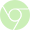
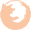
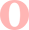

linear-gradient(direction, color-stop1, color-stop2, ...);
background:linear-gradient(to right, black, #D5D5D5); (왼쪽에서 오른쪽)
background:linear-gradient(to left, black, #D5D5D5); (오른쪽에서 왼쪽)
background:linear-gradient(to bottom right, red, yellow);
background:linear-gradient(to top left, red, yellow);
각도를 지정하지 않으면, 하나는 자동으로 주어진 방향에 기초하여 결정
0deg는 아래에서 위 방향
45deg는 하단 왼쪽에서 상단 오른쪽 방향(즉 45도 방향임)
90deg는 왼쪽에서 오른쪽 방향
180deg는 상단에서 하단 방향
음수값도 가능함. -45deg
- background:linear-gradient(45deg, skyblue, yellow, green);}
- background:linear-gradient(90deg, skyblue, yellow, green);}
- background:linear-gradient(180deg, skyblue, yellow, green);}
그레디언트 축에서 색상점(color stop)의 위치를 지정할 수 있는데 % 나 길이값(20px 등)도 가능하다.
background:linear-gradient(to right, skyblue 5%, green 20%, white);}
background-color: skyblue;
background: -webkit-linear-gradient(left top, white); /* Safari 5.1 ~ 6.0, chrome 10.0~25 */
background: -o-linear-gradient(bottom right, white); /* Opera 11.1~ 12.0 */
background: -moz-linear-gradient(bottom right, white); /* Firefox 3.6 ~ 15 */
filter: progid:DXImageTransform.Microsoft.gradient(startColorstr='16진수 색상값', endColorstr='16진수 색상값'); /*IE6~8*/
-ms-filter: "progid:DXImageTransform.Microsoft.gradient(startColorstr='16진주', endColorstr='16진수')"; /*IE8+*/
background: linear-gradient(to bottom right, skyblue, white); /*표준 문법 */}
참고 : http://angrytools.com/gradient/
반복형 그레디언트는, 그레디언트를 반복 패턴으로 보여준다.
예) #linear1{background:repeating-linear-gradient(white, yellow 20px, green 40px);}
white가 시작점, yellow 20px는 중간색이며, green 40px는 마지막 색상점이다. 그레디언트 크기는 마지막 색상점 위치와 크기와 동일하다.
|  |  |  | ||
|---|---|---|---|---|
| 지원 | 10 | 지원 | 지원 | 지원 |
| -webkit- | -ms- | -moz- | -webkit- | -o- |